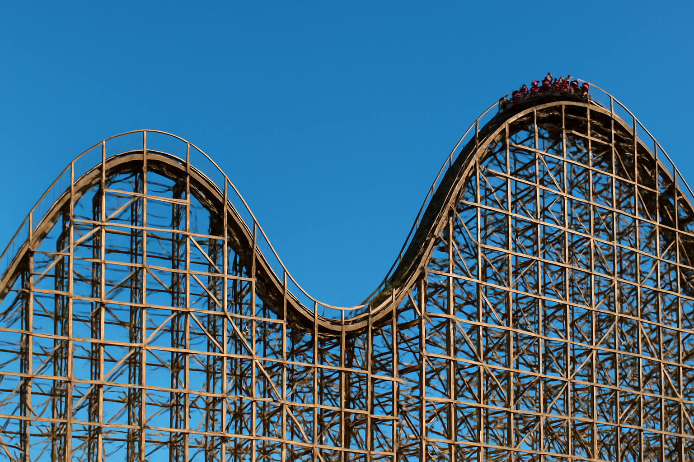

Sinusoidal Function

Equations: y = 2·sin(x / 1.3), y = (0.98·x - 4.8)^2 - 0.5, y = 3·sin(x / 1.5 + 2.5)
Transformations: Vertical stretch by a factor of 2, horizontal stretch by a factor of 1.3. Horizontal stretch by a factor of 1/0.98, horizontal shift to the right by 4.8/0.98 units, vertical shift downwards by 0.5 units. Vertical stretch by a factor of 3, horizontal stretch by a factor of 1.5, horizontal shift left by 2.5 units
Domain and ranges: x between 0 and 4, y between -2 and 2. x betwwen 4.2 and 5.6, y less than 0. x between 5.7 and 10, y between -3 and 3
Almost perfect graph, after tweaking the first hill, it was basically a perfect fit second hill is a bit wonky though